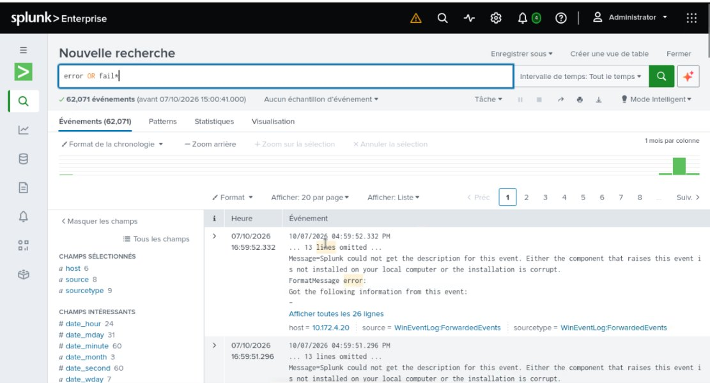

Ressources de supervision des réseaux et de supervision de la sécurité en 3e année de BUT R&T. Les TP de supervision de la sécurité ont été réalisés en binôme.
Objectif :
Mettre en place les deux briques de surveillance d'un système d'information : la supervision de l'état des équipements, et la centralisation des journaux pour détecter les incidents de sécurité.

Recherche dans Splunk sur les journaux Windows remontés par le collecteur
Travaux :
Supervision réseau avec Zabbix :
Installation du serveur Zabbix (le dépôt du sujet étant obsolète, adaptation vers Zabbix 7.0 LTS sur Debian 12)
Agent Zabbix sur des VM, en mode actif et passif
Supervision SNMP d'un routeur Cisco
Configuration de l'architecture « TechCorp »
Collecte des journaux Windows, en suivant le guide de l'ANSSI sur la journalisation en environnement Active Directory :
Création d'un domaine Active Directory
Collecteur WEC et postes WEF, transfert par WinRM
Configuration diffusée par GPO
SIEM Splunk :
Mise en service du SIEM et ouverture du port de réception 9997
Universal Forwarders sur Windows et sur Debian (syslog, auth.log)
Compte analyste séparé du compte administrateur
Recherches dans les journaux et étude des règles de détection Sigma